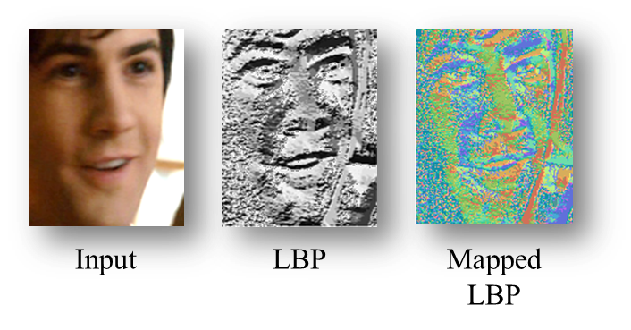

Emotion Recognition in the Wild via Convolutional Neural Networks and Mapped
Binary Patterns

Figure 1. Image intensities (left) are converted to Local Binary
Pattern (LBP) codes (middle), shown here as grayscale values. We propose to map
these values to a 3D metric space (right) in order to use them as input for Convolutional
Neural Network (CNN) models. 3D codes in the right image are visualized as RGB colors.
Abstract: We present a novel method
for classifying emotions from static facial images. Our approach leverages on the
recent success of Convolutional Neural Networks (CNN) on face recognition problems.
Unlike the settings often assumed there, far less labeled data is typically available
for training emotion classi cation systems. Our method is therefore designed with
the goal of simplifying the problem domain by removing confounding factors from
the input images, with an emphasis on image illumination variations. This, in an
effort to reduce the amount of data required to e ectively train deep CNN models.
To this end, we propose novel transformations of image intensities to 3D spaces,
designed to be invariant to monotonic photometric transformations. These are applied
to CASIA Webface images which are then used to train an ensemble of multiple architecture
CNNs on multiple representations. Each model is then ne-tuned with limited emotion
labeled training data to obtain nal classi cation models. Our method was tested
on the Emotion Recognition in the Wild Challenge (EmotiW 2015), Static Facial Expression
Recognition sub-challenge (SFEW) and shown to provide a substantial, 15.36% improvement
over baseline results (40% gain in performance)*.
* These results
were obtained without training on any benchmark for emotion recognition
other than the EmotiW'15 challenge benchmark. To our knowledge, to date,
these are the highest results obtained under such circumstances.
Reference: Gil Levi
and Tal Hassner, Emotion Recognition in the Wild via Convolutional Neural Networks and Mapped
Binary Patterns, Proc. ACM International Conference on Multimodal Interaction (ICMI), Seattle, Nov. 2015
Click here for the
PDF
Click here for the
BibTex
Downloads
This page provides code and data to allow reproducing our results. If you find our code useful, please add suitable reference to
our paper in your work. Downloads include:
What's new
Nov. 20th, 2017:
Fixed broken links to
Python notebook and
CNN models.
Dec. 14th, 2015:
Git repository added with sample code, meta-data files and instructions.
Copyright 2015, Gil Levi and Tal Hassner
The SOFTWARE provided in this page is provided "as is", without any guarantee made
as to its suitability or fitness for any particular use. It may contain bugs, so
use of this tool is at your own risk. We take no responsibility for any damage of
any sort that may unintentionally be caused through its use.
Last update
14th of Dec., 2015
|